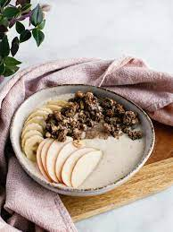

<h1>Skyr Winter Bowl</h1>
<body>
    Skyr is yogurt that goes through an icelandic method. It is thick and contains high amounts of protein</sub>
    <h2>Ingredients</h2>
    <ul>1 cup:Skyr Yogurt</ul>
    <ul>Apple</ul>
    <ul>Granola</ul>
    <ul>Banana</ul>
<h2>Steps</h2>
    <li>Place Skyr as base layer</li>
    <li>Chop fruit and place along brim</li>
    <li>Top off with granola and cinnamon</li>
</body>
